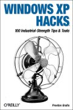

|  |
| About IR |
| Editors |
| Author instructions |
| Copyright |
| Author index |
| Subject index |
| Search |
| Reviews |
| Register |
| Home |
Galla, Preston. Windows XP Hacks: 100 industrial strength tips and tools. Sebastopol, CA: O'Reilly, 2003. xviii, 392, [4] p. ISBN 0-596-00511-3. $24.95 £17.50
This is one of the 'Hacks' series published by O'Reilly, examples of which we've seen reviewed here before. Why this one has taken so long to turn up for review, I'm not quite sure—perhaps it floated across the Atlantic and has only just arrived.
However long it has taken to get here, it is a welcome sight for anyone interested in tweaking this latest Microsoft operating system (although how much longer it will remain the latest is, of course, a key question, since no one seems quite certain when the next, code named 'Longhorn' at the moment, is due to arrive&mdashperhaps it is as difficult to corral as its namesake!).
In twelve chapters, the author (a longtime computer journalist) gives guidelines on how to cope with XP's idiosycracies and how to take advantage of features that may be hidden away, or tweakable through the use of third-party software. Usefully, the hacks are graded according to the amount of knowledge you need in order to use them—naturally, I paid special attention to those graded 'Beginner' and, coincidentally, they turned out to be of immediate value when, as a result of either a rogue bit of spyware, or a Microsoft security download, my explorer.exe suddenly gave up the ghost just before Christmas.
Fortunately, Windows XP Hacks was ready to hand and, instead of re-installing the operating system and losing heaven knows how many files, I was able to use 'System Restore' to take the system back to an earlier date, after which it functioned normally&mdasyh;or, at least, normally until now! I also found the book useful to help me clear out the Registry, and the start up programs, and various other small tasks. In effect, the book is a kind of short manual on the effective use of Windows XP, without having to wade through masses of, for the moment, irrelevant guff.
So, you want to know how to generate print-outs of directory listings? Turn to Hack No. 21, which tells you how to create a batch file in Notepad that will do just this. You have a wireless network and find the time taken to display the other devices unduly tedious? Turn to Hack No. 54, which shows you how to tweak the Registry setting so that your PC will not, in future, check for Scheduled tasks - which is slowing down the process. Tired of Outlook or Outlook Express blocking files that are perfectly innocent, on the assumption that they may contain viruses? Turn to Hack No. 64, which tells you how to open blocked attachments. Of course, you do this at your own risk, since they may, after all, contain viruses! Want to capture screenshots effectively? Hack No. 77 tells you how and, in common with other hacks, recommends third party freeware or shareware to help you do this.
This book will sit on my desk, beside the PC, until the next operating system has an equivalent title. It is eminently practical, to the point, readable and, above all, useful. If you want to get the best out of your PC and have it run the way you want it to run, buy this book.
Professor Tom Wilson
Editor-in-Chief
December, 2004
How to cite this review
Wilson, T.D. (2005). Review of: Galla, Preston. Windows XP Hacks: 100 industrial strength tips and tools. Sebastopol, CA: O'Reilly, 2003. Information Research, 10(2), review no. R154 [Available at: http://informationr.net/ir/reviews/revs154.html]